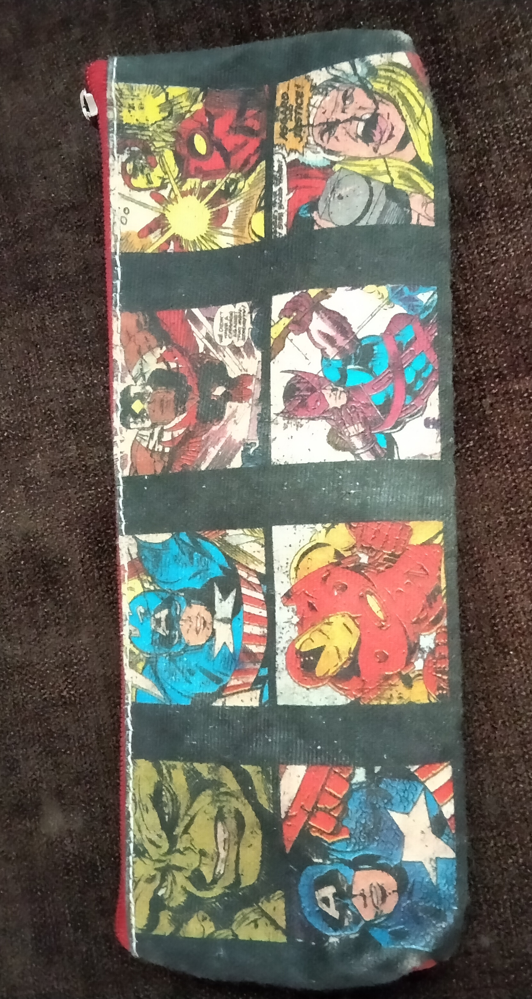

Mobile net vs google lens
Object is trained on
Remote|
spoon|
Pouch|
Mug
spoon
Output on
google lens :
silver spoon
Output on
Mobile net :
wooden spoon
Results
google lens is accurate
Remote control
Output on
google lens :
tata sky remote
Output on
Mobile net :
remote control, remote
Results
Both mobile net and google lens are accurate
Pouch

Output on
google lens :
wallet
Output on
Mobile net :
accordion, piano accordion, squeeze box
Results
Both mobile net and google lens are not accurate
Mug
Output on
google lens :
tiger ceramic mug
Output on
Mobile net :
coffee mug
Results
Both mobile net and google lens are accurate
I have tested 4 images.
Mobile net predicted accurate 4 correctly
according to my case study Mobile net is accurate